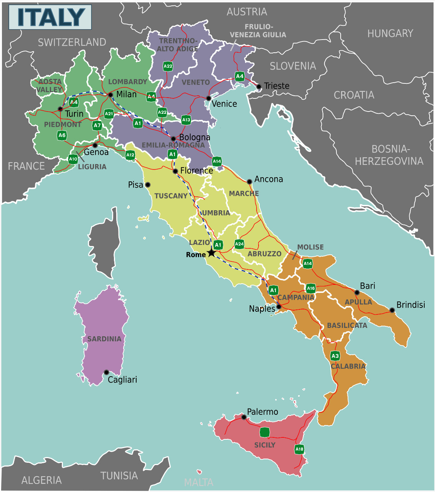
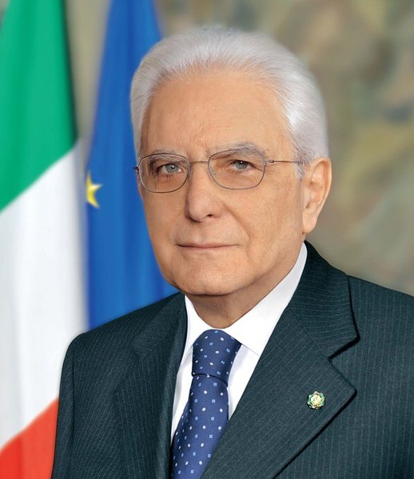

Historia

Italia existe como estado desde 1861; antes de esta fecha, solo estuvo unificada como parte integrante del Imperio romano. Su influencia como capital del catolicismo ha sido poderosa, y las dinámicas ciudades-estado de Italia impulsaron la modernidad con el Renacimiento.
La unidad de Italia se ganó con sangre: norte y sur se fundieron en un matrimonio mal avenido pero duradero. Incluso hoy, Italia se muestra como un conjunto de regiones dispares, un presente con profundas raíces en el pasado.
Antigua Roma
La Antigua Roma fue una fuerte sociedad agrícola que durante el siglo VIII a. C. creció y llegó a ser uno de los imperios más respetados en existencia. Realmente el área disfrutó de su poder, conociendosé como Paz Romana. Grandes nombres como Julio Cesár y Augusto tomaron el control y querían seguir el camino de la paz, cerrando las puertas a las guerras cuando era posible.
Imperio Romano
El Imperio Romano resultó también en la construcción de edificios impresionantes que todavía podemos visitar hoy en día, uno de ellos, el Coliseo de Roma. Ese imperio duró más de mil años y el tiempo no se mide en décadas, sino en siglos. Solo había una única moneda, un código legal, un ejército y solo un emperador que dominaba ese territorio del mundo occidental que logró ganar su nombre, el corazón de Europa. Con todo ese éxito, sin embargo, tenía que haber un cambio, ese cambio llegó en el año 476 cuando el Imperio Occidental fue atacado y las invasiones bárbaras pusieron fin al imperio, dando inicio a la Edad Media.

Tras la caída del Imperio Romano, Italia fue tomado por un grupo que se llamaba los ostrogodos y luego Teodorico el Grande del emperador de Oriente llevo su pueblo a Roma en el año 488. En 493, Teodorico mató al hérulo Oroacro y tomó el puesto como emperador. Cuando Teodorico murió en 526, su nieto Atalarico fue nombrado el nuevo emperador, pero como él no tenía hijos, el reino desapareció con su muerte décadas después.
Había bastantes cambios en ese tiempo, pero los pueblos y ciudades en Italia vieron muchas mejorías con Justiniano I, el Imperio bizantino quien comenzó una serie de campañas con la idea de unir la mediterránea. Pero lo que pasó era que el reino ostrogodo, combinado con lo que querían los bizantinos hizo que Italia fuera un objetivo. El General Belisario aprovechó y tomó a Nápoles, en el año 536 llegó a Roma, siguió y tomo a Milán y Ravena en 540 y ya por el año 560 tenía el control del área. Los lombardos, un pueblo germánico que llegó a Panonia con Justiniano I, empezaron a presionar al papa, y al final hicieron que el rey, Pipino el Breve realizara campañas en el norte de Italia durante los años 756 y 758 pero su gran esfuerzo resultó en su muerte. Ahora Carlomagno llevó el control de los francos recién reunificados y el imperio romano de occidente tomo un gran paso en una nueva dirección en 774.
Los años entre los siglos X y XIII varias republicas marítimas disfrutaron economía que florecía como resultado de tanta actividad comercial, todo bajo la idea de una autonomía política. Eso refiere, principalmente, a cuatro ciudades en específico; Amalfi, Pisa, Genova y Venecia. Estas ciudades, entre otras más pequeñas, gozaban de su independencia. Constantino el Grande también apareció durante este tiempo. Constantino ordenó la construcción de la nueva Roma que fue llamado en su honor.
El nacimiento de una nación
La Revolución francesa al final del s. XVIII y la figura emergente de Napoleón despertaron en Italia la esperanza de convertirse en una nación. Desde los días gloriosos del Renacimiento, los divididos pequeños estados de Italia habían perdido poder y relevancia en el escenario europeo. A fines del s. XVIII, la península era poco más que un campo de juego para las grandes potencias y, para aquellos de pensamiento romántico, el destino principal del Grand Tour.
En 1797 Napoleón acabó con la República veneciana (Venecia había vivido de 1000 años de independencia) y en 1805 creó el llamado Reino de Italia. Ese reino no era independiente, pero el terremoto napoleónico indujo a muchos italianos a pensar que podría crearse un estado italiano. No iba a ser fácil. El Congreso de Viena restableció en sus respectivos tronos a las familias derrotadas por Napoleón.
El nuevo y turbulento estado asistió a virajes violetos entre los socialistas y la derecha. Giovanni Giolitti, uno de los primeros ministros italianos que más duró en el cargo, consiguió tender puentes entre los extremos políticos e instituyó el sufragio femenino. Sin embargo, a las mujeres se les negó el derecho al voto hasta después de la II Guerra Mundial.
Una vista hacia el presente
El fulgurante crecimiento posterior a la Segunda Guerra Mundial convirtió a Italia en una de las primeras economías mundiales, pero en la década de 1970 la economía empezó a desfallecer, y a mediados de la década de 1990 sobrevino una prolongada crisis. Las altas tasas de desempleo e inflación, unidas a una ingente deuda nacional y una moneda fluctuante (la lira), indujeron al Gobierno a aplicar medidas draconianas, lo que permitió a Italia adoptar el euro en el 2001.
En la década de 1990 la escena política italiana se vio sacudida por el escándalo de la Tangentópolis (“ciudad de los sobornos”). Dirigido por un grupo de magistrados milaneses, entre ellos el implacable Antonio Di Pietro, el proceso judicial conocido como Mani Pulite (Manos Limpias) implicó a miles de políticos, funcionarios y empresarios.
El partido Forza Italia del magnate de los medios de comunicación Silvio Berlusconi ganó las elecciones en el 2001 y otra vez en abril del 2008 (tras un paréntesis de dos años de gobierno de centroizquierda).
En el 2011, Berlusconi se vio obligado a dimitir al agravarse la crisis de la deuda. Un Gobierno de demócratas encabezado por el economista Mario Monti presidió el país hasta las elecciones de febrero del 2013. Tras largas negociaciones poselectorales, Enrico Letta, del Partido Democrático (PD), fue designado primer ministro al frente de una precaria coalición de centroizquierda. En el 2014, Letta fue desbancado por el antiguo alcalde de Florencia, Matteo Renzi, de su mismo partido.
A pesar del cambio de liderazgo y el dinamismo de Renzi, cualquiera que se ponga al timón de este país se enfrenta a una ardua tarea. Los problemas de Italia siguen siendo los mismos, entre ellos la Mafia, la corrupción, el nepotismo, la fuga de cerebros, la falta de crecimiento, el paro y la baja tasa de natalidad.
Costumbres
Las costumbres son formas de comportamiento particular que asume toda una comunidad y que la distinguen de otras comunidades, en nuestro caso que hablamos
de Italia, hablaremos un poco sobre sus costumbres informales a las cuales nos referimos como acciones que llevan en su cotidianeidad y de sus costumbres formales
donde ya entran acciones que se realizan en días festivos o acciones que van más relacionadas con su cultura.
Empezando por sus principales costumbres informales, tenemos las siguientes:
- Es muy común saludarse con un apretón de manos aunque el saludo habitual entre amigos o familiares sin importar sexo es el beso en las mejillas.
- También se tiene la costumbre de acompañar el saludo con el título de dicha persona, aunque se ha extendido la costumbre de hacerlo por el nombre de pila.
- Para los italianos la vida familiar es muy importante, muchas familias viven “nucleadas” o en sitios cercanos, y es usual la ayuda entre los miembros del grupo.
- Los fines de semana suelen reunirse en las casas, visitar familiares y amigos, las comidas, especialmente el almuerzo del día domingo, son largas y pausadas.
- Si se es invitado a una reunión social, es costumbre llevar un pequeño obsequio para los anfitriones, además de que
en los lugares más pequeños, el centro de reunión social suele ser el café, aunque lo principal sigue siendo la vida en familia.
- Los italianos tienen un profundo sentido religioso, aunque sólo el 30% de la población es practicante, y es muy importante respetar ese sentimiento, además
de que los edificios religiosos no pueden visitarse con pantalón corto o camisetas sin mangas, tampoco se debe levantar la voz.
Finalmente, hablando de sus costumbres formales, se tiene que en celebraciones como Navidad y en Nochevieja comen lentejas, porque la relacionan con la abundancia.
Y en pascuas consumen mucho cordero y pan de paloma el cual es típico de esta época. Por su fe católica la familia es el pilar fundamental de su sociedad, mantienen
fuertes lazos y tradiciones como el bautismo y el matrimonio. Algo que es muy importante en Italia como costumbre es asistir al estadio a ver al equipo de fútbol
de la ciudad o la selección nacional, la Azurri, como se le llama por el color de su uniforme. También se tiene de costumbre que en todas las reuniones familiares,
se saludan diciendo "ciao" que es un saludo informal y significa hola o adiós, formalmente sería "buon giorno" (buenos días) y "buona sera" (buenas tardes).
Por último, En noche vieja en zonas como Nápoles, Calabria y Sicilia arrojan los muebles por la ventaja para atraer la buena suerte, y algo por lo que
muchos turistas han pasado es que la propina está incluida en la cuenta, se debe recordar si se acostumbra a dejar propina en los restaurantes y visitas Italia. Y el valor de esta
varía dependiendo del lo que hayas gastado en la comida.


Situación política
Política interior
Gobierno
Mario Draghi, como nuevo Presidente del Consejo de Ministros, ha constituido el 13 de febrero un ejecutivo con seis partidos políticos (M5S, Liga, Partido Democrático, Forza Italia, Italia Viva y Liberi e Uguali).
Legislativo
La composición de las principales fuerzas políticas en ambas cámaras, fruto de las elecciones de marzo de 2018, era como sigue:
Instituciones del Estado y Miembros del Gobierno
Presidente de la República: Sergio Mattarella (febrero 2015, reelegido en enero de 2022)
Presidente del Consejo de Ministros: Mario Draghi (febrero 2021)
Presidenta del Senado: Maria E. Alberti Casellati (Marzo 2018)
Presidente de la Cámara de los Diputados: Roberto Fico (Marzo 2018)
Datos biográficos del presidente actual
Presidente de la República, Sergio Mattarella

Nació en Palermo el 23 de julio de 1941.
Licenciado en Derecho por la Universidad “La Sapienza” de Roma.Ejerció la abogacía y fue profesor en la Universidad de Palermo hasta 1983.
Se inició en política con la Democracia Cristiana en cuyas listas fue elegido diputado en 1983, 1987 y 1992.
Durante dicho período ocupó dos carteras ministeriales: Relaciones con el Parlamento (1987-1989) y Educación (1989-1990).
Participó en la fundación del Partido Popular de Italia, continuación de la Democracia Cristiana, en cuyas listas resultó elegido en las elecciones legislativas de 1994 y 1996.
Desempeñó nuevamente cargos en el Ejecutivo como Vicepresidente del
Consejo de Ministros (1998-99) y Ministro de Defensa (1999-2001).
En 2001 fue reelegido a la Cámara de Diputados en las listas de la coalición de centro-izquierda la “Margarita”.
En 2006 fue elegido diputado por séptima vez, en este caso en las listas del “Olivo” nueva coalición de centro-izquierda de la que pasó a formar parte la “Margarita”.
En 2007 participó en la fundación del Partido Democrático.
Tras abandonar el Parlamento en 2008, en 2009 fue designado miembro del Consejo de Presidencia de la Justicia Administrativa del que luego pasaría a ser Vicepresidente.
En 2011 fue designado por el Parlamento magistrado del Tribunal Constitucional, cargo que ocupó hasta enero de 2015.
Elegido Presidente de la República el 31 de enero de 2015.
El Presidente de la República fue reelegido el 29 de enero de 2022, con un mandato de 7 años.
Política exterior
La política exterior italiana se ha basado tradicionalmente en el apoyo al proyecto europeo, del que Italia fue uno de los miembros fundadores con firma del Tratado de Roma en 1957, y en materia de defensa colectiva a la relación transatlántica en el marco de la OTAN. Junto a estos dos ejes - europeo y transatlántico - otro ámbito prioritario es el Mediterráneo, debido a la proximidad geográfica, los vínculos históricos y comerciales con la región, y por ser actualmente la ruta natural de los flujos migratorios hacia Italia.
En consonancia con su proyección europea y atlántica, Italia es miembro de la UE, OTAN, OSCE y del Consejo de Europa. Italia también es miembro del G-7 y del G-20, cuya presidencia ostenta en 2021.
Desde una perspectiva global, Italia es uno de los mayores contribuyentes de fondos al presupuesto de la ONU. En la actualidad es el séptimo contribuyente al presupuesto regular de la organización y desde el 1 de enero de 2019 su aportación para el periodo 2019-2021 asciende a una cuota de 3,307% del total. Italia ocupó por 7ª vez un puesto como miembro no permanente del Consejo de Seguridad de Naciones Unidas para el periodo 2017-2018, compartiéndolo con Países Bajos. Italia ha sido también miembro del Consejo de Derechos Humanos en dos ocasiones y ha sido reelegida para el trienio 2019-2021.
talia es el octavo contribuyente al presupuesto de operaciones de mantenimiento de la paz. Italia participa actualmente en 36 misiones militares internacionales en 24 países, con un total de 7.488 efectivos
Italia es miembro de todos los Organismos y Agencias especializadas de NNUU; tres de ellos tienen su sede en Roma: la Organización de las Naciones Unidas para la Agricultura y la Alimentación (FAO), el Programa Mundial de Alimentos (PMA) y el Fondo Internacional de Desarrollo Agrícola (FIDA).